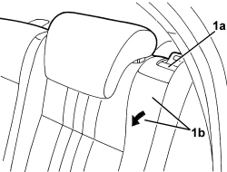
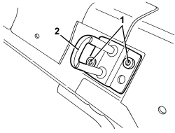
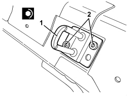
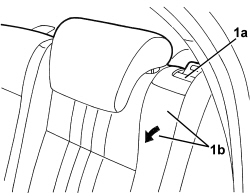
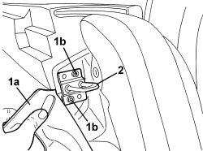

7050A45 STRIKER FOR ONE SPLIT REAR SEAT BACKREST FASTENING RELEASE DEVICE ONE LH OR RH - R.R
- Path
- Procedures > 70 FITTINGS > 7050 REAR SEATS > 7050A REAR SEAT ASSEMBLY > 7050A45 STRIKER FOR ONE SPLIT REAR SEAT BACKREST FASTENING RELEASE DEVICE ONE LH OR RH - R.R
- Kind
- repair procedure (removal / refitting; the operation number is the code)
- Applies to
- all engines; all production periods
- Interactive page
- https://sloeber94.github.io/elrnDB/alfa/159/en/#/939004842
Applies to: all engines; all production periods
 Removing
Removing
 Refitting
Refitting1. Adjust the lever (1a) and release the backrest (1b), then rotate it forwards.

Applies to: all engines; all production periods
1. Undo the bolts.
2. Remove the striker.

Applies to: all engines; all production periods
Refitting
Removing- Check that the striker is not damaged.
1. Position the striker.
2. Tighten the bolts.
Component | Fastening | dia | Value (daNm) | Validity |
|---|---|---|---|---|
REAR SEAT BACKREST STRIKER | Bolt | M8x22 | 2.2 ÷ 2.6 |

Applies to: all engines; all production periods
- Lift up the backrest and attach it to the striker.
- Check that the backrest is correctly attached to the striker.
Applies to: all engines; all production periods; only with equipment: Station Wagon
Removing
Refitting1. Adjust the lever (1a) and release the backrest (1b), then rotate it forwards.

Applies to: all engines; all production periods; only with equipment: Station Wagon
1. If necessary, move the cover (1a) slightly and undo the striker fixing bolts (1b).
2. Remove the striker.

Applies to: all engines; all production periods; only with equipment: Station Wagon
Refitting
Removing- Check that the striker is not damaged.
- Position the striker.
- Tighten the bolts.
- If moved aside, place the cover in position.
- Lift up the backrest and attach it to the striker.
- Check that the backrest is correctly attached to the striker.